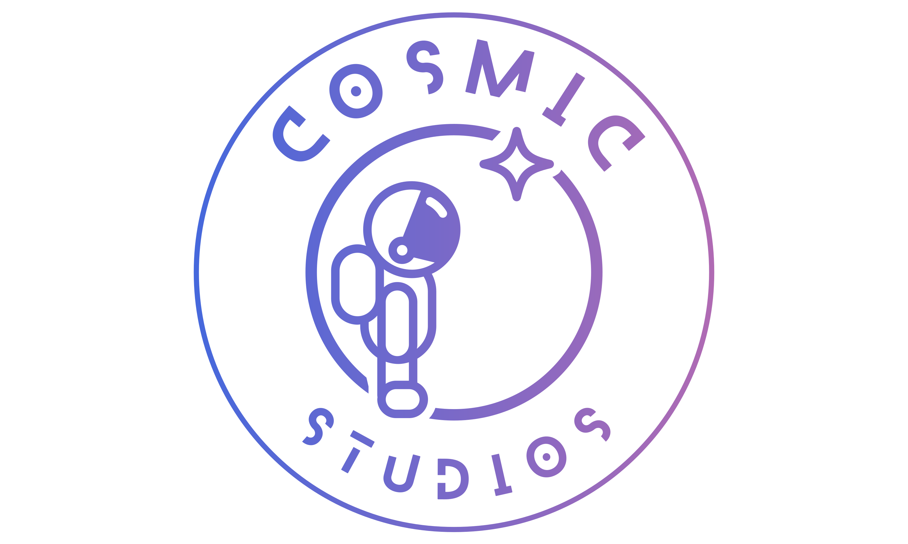

Cosmic Studios is my indie development studio that i have created to showcase my projects and work.
My name is Ryan Mcfly and I am currently studying Immersive Technologies at the University of Winchester.
This portfolio is where I will be uploading my projects and their progress throughout my studies. Here you can see my progress in real time on my projects along with other information about the thought and creation process of each of my projects and why they benefitted me.